Gallery
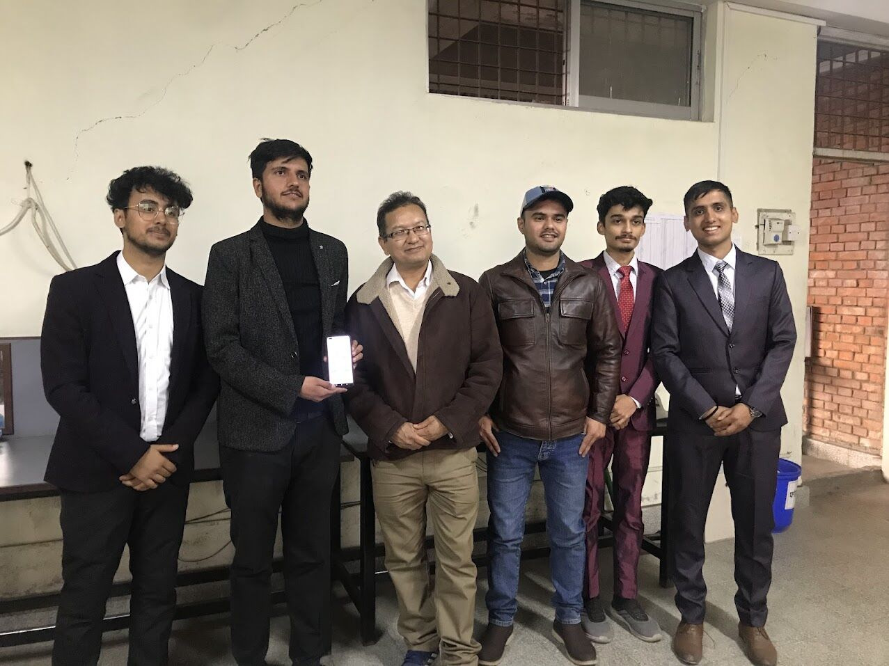
After major project defense with external supervisor Er. Himalaya Kaskshapati

Emceeing 2nd Council Meeting of LDC 325 M Nepal as District Secretary

Being handed the responsibility of District Secretary of LDC 325 M Nepal for LY 23/24
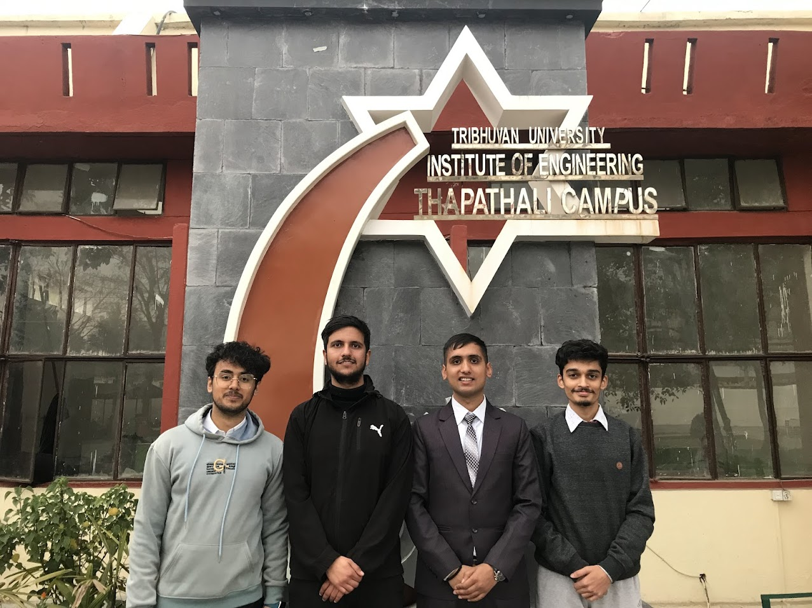
Project group members for Minor and Major Projects

Emceeing during Leo Leadership Camp organized by LDC 325 M Nepal
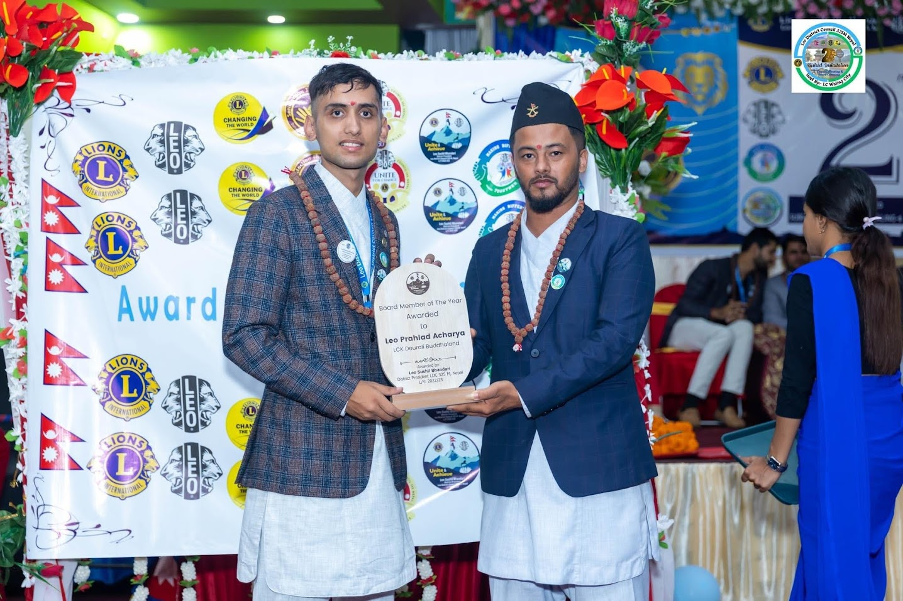
Awarded Board Member of the Year — LDC 325 M Nepal, LY 22/23
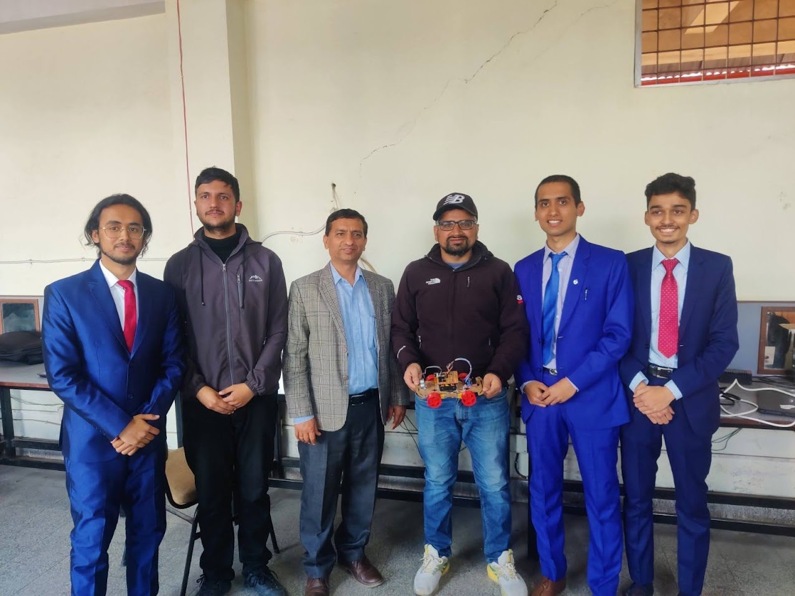
After minor project defense with Dr. Ritu Raj Lamsal and Er. Umesh Kanta Ghimire
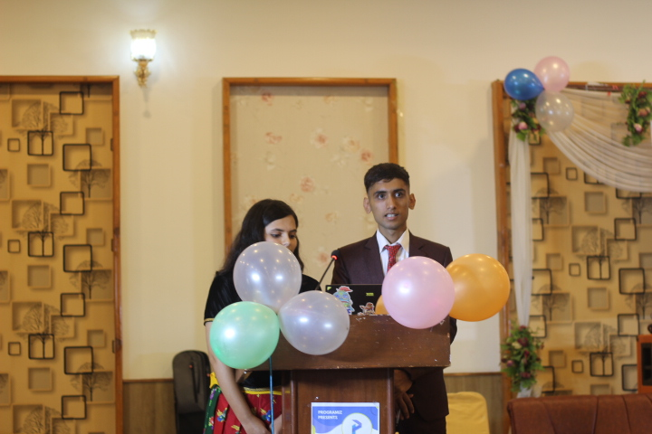
Emceeing Welcome program for freshers at Thapathali Engineering Campus
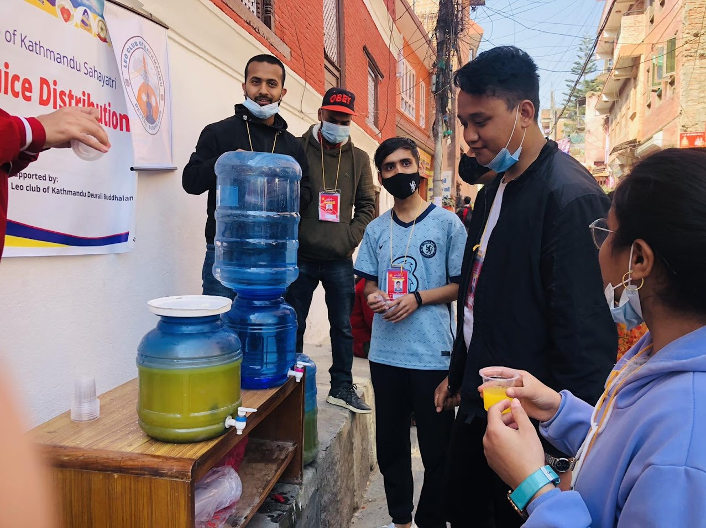
Volunteering during Shivaratri Festival at Pashupatinath Temple
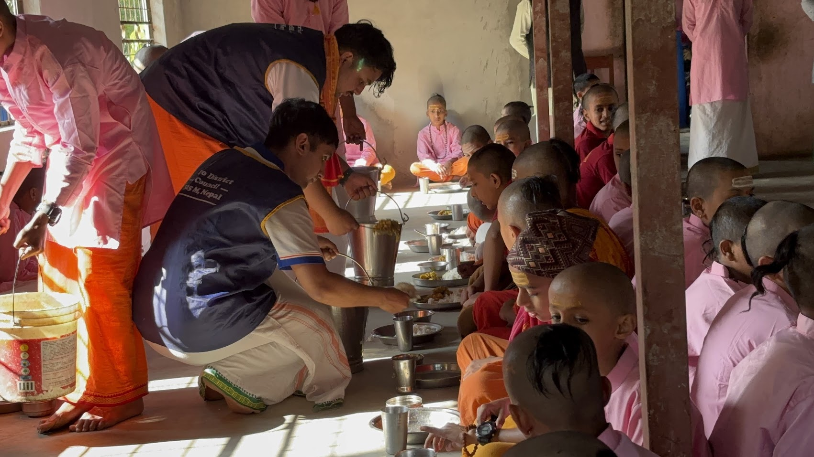
Volunteering in Hunger Relief Project at Ramdi, Syangja
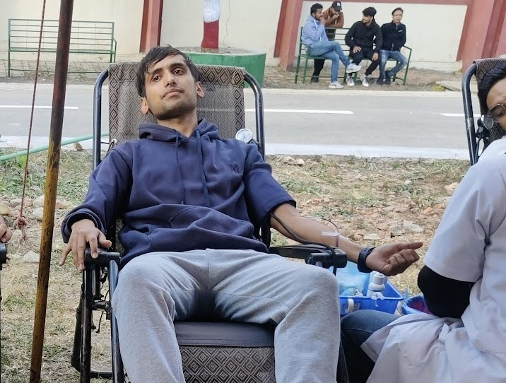
Blood Donation Program at Thapathali Engineering Campus
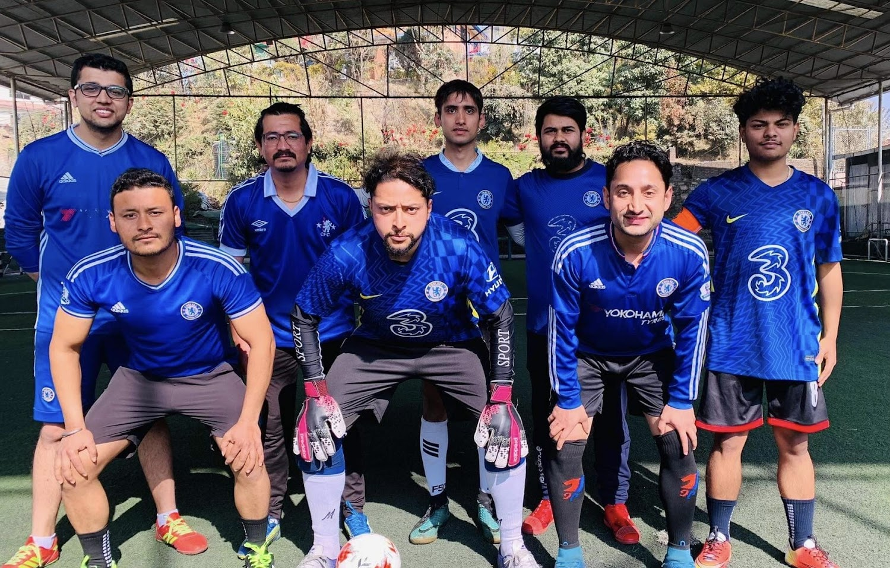
Futsal Tournament — Official Chelsea Supporters Club Nepal
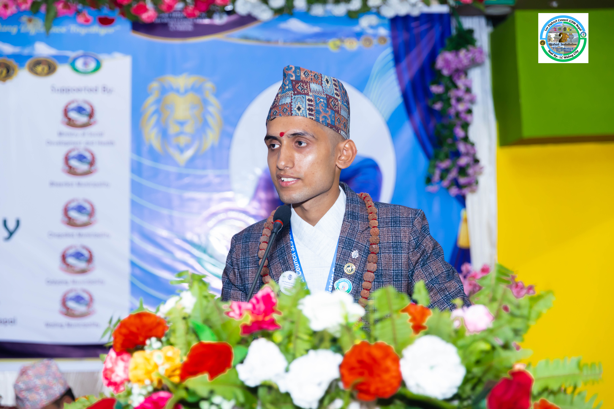
2nd District Installation & 1st Council Meeting — LDC 325 M Nepal, Waling
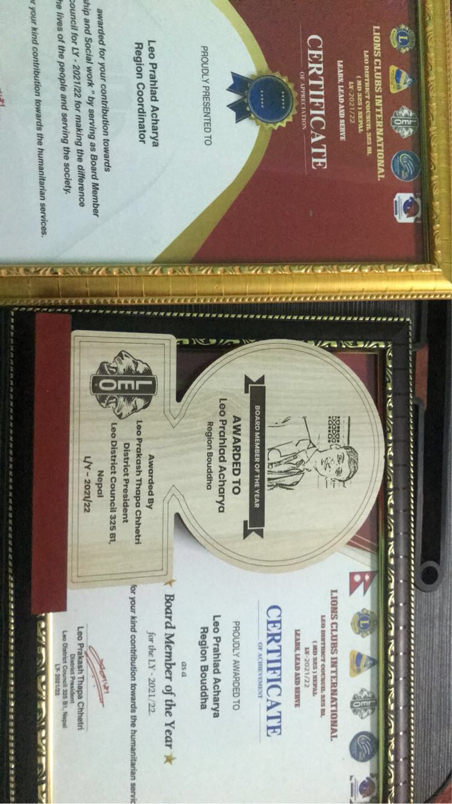
Awards as Region Coordinator — LDC 325 B1 Nepal, LY 21/22

With Rachel, speaker of Talk Show organized by ECAST Thapathali